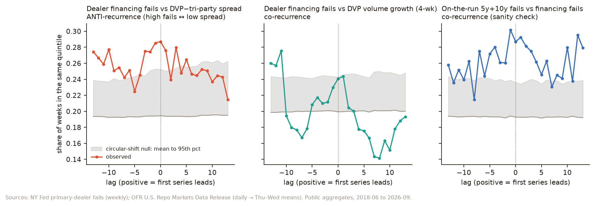
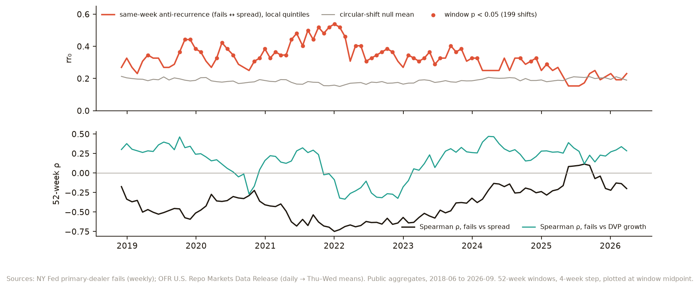
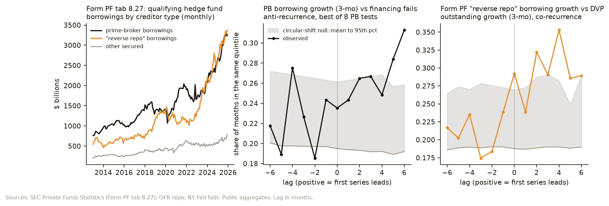
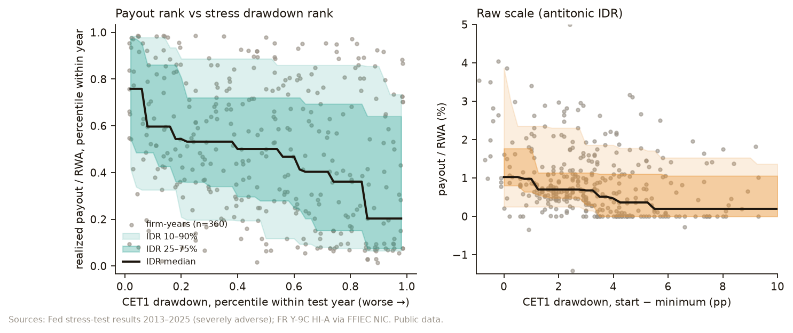
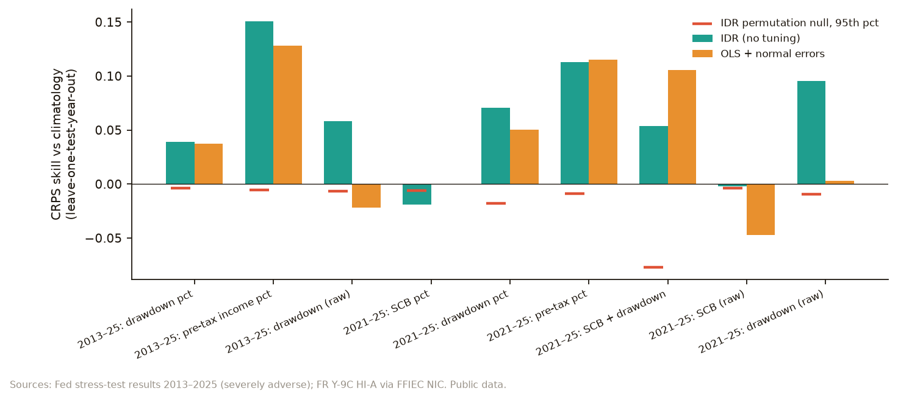
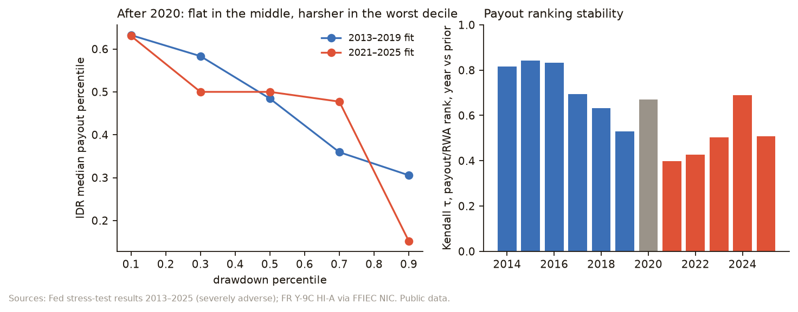

Saturday · November 14, 2026 · scheduled edition · completed Sunday, November 15 after an interruption · aimed at Q1 and Q3 · exotic · public aggregate data
Methods scout
The first edition for the two questions approved on 14 November. A coupling measure from cognitive science asks whether hedge-fund borrowing, repo and settlement fails “visit the same states” at the same time, or with a lag. A distribution-free regression from probabilistic weather forecasting asks how much of the cross-firm spread in realized payouts the stress test describes. Both run on public data only.
Completion note
The scheduled 2 PM (EST) run on 2026-11-14 was cut off before it published. Jared asked on 2026-11-15 for it to be finished. This page completes that run. It keeps the 11-14 date, the same two methods and the same seed (20261114). What changed on completion: (1) every input panel was rebuilt or checked against its public source before reuse (details under each method). (2) The IDR script was rerun from scratch, and every result matched the 11-14 partial output exactly; only run time differed. (3) The CRQA run had stalled. It was rerun, with a fix to its windowed test: the 11-14 version used a statistic that cannot change under the null it was compared against (see 1b). (4) Figures, “Found via” lines, secret-sauce plans and watch items were written on 2026-11-15. Part A of the routine (the traceot nightly page) had already been published on 11-14 and was not touched.
● Weekly Treasury financing fails and the DVP–tri-party rate spread are anti-recurrent in the same week (p = 0.011). The link holds in 52 of 96 rolling years between late 2018 and mid-2025, and is absent in every window ending after July 2025.● Form PF prime-broker borrowings show no lead, lag or co-movement with repo volumes, the spread or fails that survives a familywise test. Form PF “reverse repo” borrowings lead cleared DVP volume growth by about 4 months (p = 0.001).● Severely adverse projected pre-tax income describes next payouts best: 15% CRPS skill over climatology (permutation p = 0.003). The SCB itself has none (−1.9%).● On the raw payout/RWA scale, IDR beats OLS with normal errors in every comparison: +5.8% vs −2.2% (2013–25), +9.5% vs +0.3% (2021–25)
The short version
Data. Public aggregate and public firm-level filings only. Q1: SEC Private Funds Statistics (Form PF tab 8.27, qualifying hedge fund borrowings by creditor type, monthly 2013-01–2025-12), the OFR U.S. Repo Markets Data Release (daily, reduced to Thursday–Wednesday weekly means), and NY Fed primary-dealer settlement fails (weekly). Q3: the Fed’s stress-test results file (2013–2025, severely adverse), FR Y-9C Schedule HI-A payouts (Q4 year-to-date), and the Large Bank Capital Requirements PDFs for the SCB (effective October 2021–2026). No private Drive rows are published.
Cross-recurrence quantification analysis (CRQA) (Coco & Dale, Frontiers in Psychology 2014; Coco et al., The R Journal 2021; cognitive science) interesting. Each series becomes a sequence of quintile “states”. CRQA counts how often two series are in the same state at each lag. Results: (1) Weekly lag profile. Dealer financing fails and the DVP-minus-tri-party overnight spread are anti-recurrent at lag 0: high fails in the same week as a low spread. That happens 28.7% of weeks against a 19–25% shift-null band (p = 0.011 at lag 0; 0.085 across all 27 lags). Fails versus DVP volume growth peaks with DVP leading by 11 weeks, but only at familywise p = 0.069. (2) Rolling years. The same-week anti-recurrence beats its null in 52 of 96 rolling 52-week windows, all between October 2018 and July 2025. It peaks at 54% of weeks in the year to June 2022, and is absent from all 15 windows ending after July 2025, which cover the late-2025 fails spike. (3) Monthly, with Form PF. None of 8 prime-broker tests survives familywise control. Form PF “reverse repo” borrowing growth leads DVP outstanding growth by about 4 months (p = 0.001, asymmetry p = 0.001). The 11-14 windowed test was degenerate and has been fixed (see 1b).
Isotonic distributional regression (IDR) (Henzi, Ziegel & Gneiting, JRSS-B 2021; probabilistic weather forecasting) recommend for promote workflow. You give it one covariate and an order: worse stress implies lower payout. It returns a full predictive distribution for each firm, with no tuning. It is scored by CRPS, leaving one test year out, against climatology (the training distribution), OLS with normal errors, and a within-year covariate shuffle. Results: (1) Cross-section, 2013–2025 (360 firm-years, 40 firms). Payout rank is antitonic in drawdown rank (skill 3.9%, p = 0.003) and isotonic in projected pre-tax income rank (15.0%, p = 0.003). (2) SCB era, 2021–2025 (132 firm-years). The SCB has no skill (−1.9%) even though its rank correlation with drawdown is 0.92. 38% of firm-years sit at the 2.5% floor, which flattens it. Drawdown alone gets 7.0%; drawdown plus SCB gets 5.4% (OLS 10.6%). (3) Eras. A pre-2020 fit transfers to 2021–2025 (skill 7.0%). The reverse does not (−6.1%). Payout-rank persistence falls from Kendall τ ≈ 0.82–0.84 (2014–16) to 0.40–0.69 (2021–25).
Scripts, JSON and session info: docs/methods-scout/runs/2026-11-14/. Q1 weekly and monthly aggregate panels are included, since they are public aggregate series. Firm-year Q3 rows are not republished: they can be rebuilt from the public sources with verify_q3_panel.py. Descriptive work only. Nothing here is a forecast, and nothing touches the pre-registered Y-9C trading forecast study or its sealed window.
Questions
Where each question stands
Q1 (Form PF borrowings, repo and fails; open → in progress).Q1.1 lead/lag: Prime-broker borrowings neither lead nor lag repo volumes, the DVP–tri-party spread or financing fails at a familywise level (8 tests; smallest p = 0.041 before correction). Form PF “reverse repo” borrowings lead DVP outstanding growth by about 4 months, by Form PF reference month, not publication date. Q1.2 co-movement in stress: At weekly frequency, fails and the spread were tightly anti-coupled from 2019 to mid-2025, most strongly through mid-2022. In the late-2025 fails spike they disconnect, while fails and DVP growth stay co-recurrent. Q1.3 regime breaks: The rolling CRQA shows the coupling switching on (late 2018) and off (mid-2025). This is descriptive, not a formal break test. Q1.4 (tenor and venue mix) and Q1.5 (CFTC TFF positioning) were not run today.
Q3 (stress tests vs realized payouts; open → in progress).Q3.1 cross-section: Yes. Worse projected pre-tax income and larger CET1 drawdowns go with lower payout ranks, with calibrated predictive distributions that beat climatology. Q3.2 buffer vs path: The path wins. The SCB adds nothing over drawdown in 2021–2025, because the floor flattens it. Q3.3 year-to-year: Rank persistence weakened after 2020, and a pre-2020 fit still transfers forward. Q3.4 (Adverse vs Severely Adverse) and Q3.5 (dividends vs buybacks) were not run today. Payouts are calendar-year Y, so roughly half of each year’s payouts come before that year’s results. Read every number as association, not response.
Q2 (noisy program budgets; in progress). No Q2 analysis today. The picks targeted Q1 and Q3. Status and missing data are unchanged: real program-level budgets are still needed; the SYNTHETIC mocks are the only test bed.
Data searchStill missing
Q1: per-firm prime-brokerage balances are not part of this question (aggregate by design). A Form PF series with publication dates would let “leads” be read in real time. Q3: firm-level baseline projections are not published. The October 2020 SCB PDF in the 11-14 download was an HTML error page, so the 2020 SCB is missing (not needed for the 2021–2025 analysis). Q2: real program-level budgets, actuals and decision packages.
Method 01
CRQA: do two series visit the same states, and when?
Coco, M. I. & Dale, R. (2014), “Cross-recurrence quantification analysis of categorical and continuous time series: an R package”, Frontiers in Psychology 5:510, doi:10.3389/fpsyg.2014.00510 · Coco, Mønster, Leonardi, Dale & Wallot (2021), The R Journal 13(1):112–130, doi:10.32614/RJ-2021-062 · CRAN crqa 2.1.0 (2026-05-26) · field: cognitive science (dialogue and interpersonal coordination) · novelty: niche outside cognitive science and nonlinear dynamics · interesting — not promoted
Found via. Package registry · CRAN, https://cran.r-project.org/package=crqa, and the method paper in The R Journal, https://journal.r-project.org/articles/RJ-2021-062/ · picked on 2026-11-14 (crqa 2.1.0 installed from CRAN at 2:18–2:21 PM EST per the run’s install logs) · discovery path before that was not recorded by the interrupted run; both links were re-opened and verified on 2026-11-15 · field: cognitive science. Also used: Coco & Dale (2014), Frontiers in Psychology. X and SSRN were not the discovery path.
Target question. Q1.1 (lead/lag), Q1.2 (co-movement in stress) and Q1.3 (whether the relationship itself changes).
What it is. Turn each series into states \(a_t, b_t \in \{1,\dots,5\}\), here quintiles. The cross-recurrence plot marks \(R_{ij} = \mathbf{1}[a_i = b_j]\). The diagonal recurrence profile is the recurrence rate along each diagonal:
$$\mathrm{DRP}(k) = \frac{1}{n-|k|}\sum_t \mathbf{1}[a_t = b_{t+k}],$$
the share of time points where series one now matches series two \(k\) steps later. A peak at \(k>0\) means the first series leads (checked on a planted 3-step lead). Anti-recurrence uses \(6-b_t\): it counts “high here, low there”. DET is the share of recurrent points that sit on diagonal lines of length ≥ 2, i.e. runs of matching. Unlike a correlation, it looks at state co-visits, so it is insensitive to monotone transforms and outliers. The null is a circular shift of \(b\) by at least 26 weeks (12 months monthly), 999 times. It keeps each series’ own persistence and breaks their alignment. The max-over-lags statistic gives a familywise p-value.
Data rebuild (verified 2026-11-15). The weekly panel (432 complete weeks, 2018-06-06 to 2026-09-23) was rebuilt from the lab’s copies of the public files with prep_q1.py. Fails columns match exactly: financing fails are Treasury ex-TIPS dealer-financing fails to deliver (PDFTD-USTET); on-the-run fails are 5y + 10y fails to deliver. DVP and tri-party volumes and the tri-party Treasury rate match exactly. The DVP overnight rate differs by at most 0.6 bp on some days, depending on final vs preliminary OFR vintage. The monthly Form PF columns are tab 8.27, Question 43 creditor types, in $ billions.
1a · Weekly lag profile: fails, the DVP–tri-party spread and DVP volume (Q1.1)

Figure 1. Diagonal recurrence profiles, ±13 weeks. Grey band: circular-shift null from its mean to its 95th percentile (999 shifts). Public aggregates.
Pair (weekly, quintile states)
Mode
Lag-0 rate
p at lag 0
Peak lag
Familywise p (max over 27 lags)
Lead/lag asymmetry p
Spearman ρ at lag 0
Financing fails vs DVP−tri-party spread
anti
0.287
0.011
0
0.085
0.558
−0.345
On-the-run 5y+10y fails vs spread
anti
0.285
0.017
+10
0.062
0.759
−0.390
Financing fails vs DVP volume growth (4-week log)
co
0.241
0.063
−11 (DVP leads)
0.069
0.034
0.169
On-the-run fails vs financing fails (sanity)
co
0.287
0.001
−1
0.001
0.705
0.459
Financing fails vs spread
co
0.116
0.980
+10
0.816
0.642
—
The fails–spread link is same-week and symmetric in time: no lead in either direction (asymmetry p = 0.56). It matches the rank correlation (ρ = −0.35, peak at lag −1 to 0). CRQA adds a state reading: high fails co-occur with a low DVP rate relative to tri-party. Specific collateral trading special in DVP would produce this pattern; this run does not test that mechanism. The 11-week DVP-volume lead is suggestive at best (familywise 0.069). The sanity pair recovers the expected strong lag-0 coupling (p = 0.001).
1b · Rolling years: when is the coupling on? (Q1.2, Q1.3)
Fix to the 11-14 partial run. The interrupted run windowed the full-plot recurrence rate (RR) with a within-window shift null. For categorical states, \(\mathrm{RR}=\frac{1}{n^2}\sum_{i,j}\mathbf{1}[a_i=b_j]=\sum_s \hat p^a_s\hat p^b_s\) depends only on how many times each state occurs, not on their order. So every shift returns the same RR: 20.0006 observed and 20.0006 after a 50-week shift. All 96 windows came back p = 1. That output (wincrqa_v1_degenerate_null.csv) is kept for the record and not used. The rerun uses order-dependent statistics. \(rr_0\) is the share of weeks in the same local quintile (the main diagonal). DET is the line structure. Each 52-week window (4-week step) has its own quintiles and 199 within-window shifts.

Figure 2. Top: same-week anti-recurrence \(rr_0\) between financing fails and the spread, with the shift-null mean. Dots mark p < 0.05. Bottom: 52-week Spearman ρ for fails vs spread and fails vs DVP growth. Public aggregates.
Rolling-window statistic (96 windows)
Windows p < 0.05
Expected by chance
Where
\(rr_0\), fails vs spread (anti)
52
≈ 5
Windows starting 2018-10 to 2024-07; peak 0.538 vs null 0.19 for 2021-07 → 2022-06 (ρ = −0.75)
DET, fails vs spread (anti)
10
≈ 5
Scattered; DET exceeds its null by < 1 point
\(rr_0\), fails vs DVP growth (co)
18
≈ 5
2019–early 2020, late 2020–2021, and windows covering 2024-07 → 2025-12
DET, fails vs DVP growth (co)
8
≈ 5
Scattered
Windows overlap, so the 96 tests are not independent; the counts are descriptive. What holds up is the shape: the fails–spread coupling is on continuously from 2019 to mid-2025, peaks through mid-2022, and is off in all 15 windows ending after July 2025, which cover the late-2025 fails spike (\(rr_0\) 0.15–0.27 vs null 0.18–0.21; ρ between −0.23 and +0.11). In the five of those windows that end August–December 2025, fails and DVP growth are co-recurrent (p < 0.05). That is a “disconnect in stress” (Q1.2) in one leg and not the other. DET adds little beyond same-week matching, so the coupling is a matter of coincident weeks, not of shared runs.
1c · Monthly, with Form PF: borrowings vs repo and fails (Q1.1)

Figure 3. Left: Form PF tab 8.27 levels. Middle and right: monthly diagonal recurrence profiles on 3-month log growth (fails in log level), ±6 months. Public aggregates.
Monthly pair (Form PF reference month)
n
Span
Familywise p, co
Familywise p, anti
Peak (best mode)
Prime-broker growth vs tri-party Treasury volume growth
134
2014-11 → 2025-12
0.549
0.241
—
Prime-broker growth vs DVP outstanding growth
89
2018-08 → 2025-12
0.151
0.858
—
Prime-broker growth vs financing fails (log)
153
2013-04 → 2025-12
0.695
0.041
anti, +6 (not significant after 8 tests)
Prime-broker growth vs DVP−tri-party spread
92
2018-05 → 2025-12
0.177
1.000
—
“Reverse repo” borrowing growth vs DVP outstanding growth
“Reverse repo” borrowing growth vs financing fails
153
2013-04 → 2025-12
0.077
0.170
—
Prime-broker borrowings grew from $761 billion (2013-01) to $3,237 billion (2025-12; peak $3,314 billion in 2025-11), and “reverse repo” borrowings from $546 billion to $3,379 billion. Prime-broker growth does not line up with the repo or fails legs at any lag once the max over lags is used. The repo-borrowing leg does: its 3-month growth leads cleared DVP volume growth by about 4 months. Two cautions. Form PF is published about two quarters late, so this is a lead in reference month, not something a reader could have seen in time. And 3-month growth rates overlap; the shift null keeps that persistence, but a block bootstrap would be a stricter check.
Speed, limitations and verdict
Speed. One full categorical CRQA takes 0.10 s at n = 500, 0.44 s at 1,000, 2.1 s at 2,000 and 8.4 s at 4,000 (quadratic, crqa 2.1.0). The weekly lag-profile nulls (4 pairs × 2 modes × 999 shifts) took 143 s on 8 workers. The 11-14 run stalled under forked workers (mclapply) and was rerun with socket workers.
Limitations. Quintiles discard magnitude. The circular shift wraps the end of each series onto its start, which is rough for trending series (hence growth rates for Form PF). Rolling windows overlap. The monthly sample after 2018 is 89–92 months. This is descriptive and not a trading signal.
Verdict: interesting. On these data, the lag profile mostly agrees with a lagged rank correlation. The new things are the state reading (“high fails with a low spread”), a clean familywise lag test, and the rolling on/off picture, which is the most useful output for Q1.2–Q1.3. The degenerate-RR trap is easy to fall into and is now documented.
1 · EngineeringEffort S
A Rust lag-profile engine with the shift null built in
The categorical lag profile is \(O(n\cdot L)\), but crqa builds the full \(n\times n\) plot each call (8.4 s at n = 4,000). A Rust core with a Python binding would run the 999-shift null in one pass, with crqa 2.1.0 as the oracle.
Test. Exact parity (difference 0) with drpfromts on all 8 weekly and 12 monthly profiles from this page, and the full weekly null in < 1 s (R today: 143 s on 8 workers).
2 · MathTop pick
An order-aware CRQA test with familywise lag control and persistence-matched surrogates
Today’s run showed full-plot RR is order-blind and DET barely moves. Build statistics that depend on alignment (\(rr_0\), the lag profile, a lead–lag contrast), with max-T control over lags and windows. The null would be stationary-bootstrap or AR-matched surrogates instead of a wrap-around shift. Effort M.
Test. Size 5% ± 1.5 points on 2,000 simulated independent AR(1) pairs at the persistence of our weekly series, and power ≥ 0.8 for a planted same-week coupling of the size seen in 2021–22. The circular shift is the baseline to beat.
3 · New use on our dataEffort M
Joint “stress-state” recurrence across all four Q1 legs
Use multidimensional CRQA on top-quintile stress states of fails, the spread, Form PF repo growth and CFTC TFF leveraged-fund Treasury positioning (Q1.5). Ask whether the legs co-visit stress in March 2020, March 2023 and late 2025, or come apart as fails and the spread did in late 2025.
Test. A pre-registered episode list, with joint recurrence in each episode compared against a block-shift null at p < 0.05. An honest miss counts as a result.
Method 02
IDR: the whole payout distribution, under one order constraint
Henzi, A., Ziegel, J. F. & Gneiting, T. (2021), “Isotonic distributional regression”, Journal of the Royal Statistical Society Series B 83(5):963–993, doi:10.1111/rssb.12450 (arXiv:1909.03725) · CRAN isodistrreg 0.6.0 (2026-08-21; Rust core built with Cargo) · field: probabilistic weather forecasting (postprocessing of precipitation forecasts) · novelty: niche outside forecast verification · recommend for promote workflow — not promoted
Found via. Package registry · CRAN, https://cran.r-project.org/package=isodistrreg, and the paper on arXiv, https://arxiv.org/abs/1909.03725 · picked on 2026-11-14 (isodistrreg installed from CRAN by 2:21 PM EST per the run’s install logs) · discovery path before that was not recorded by the interrupted run; both links were re-opened and verified on 2026-11-15 · field: weather forecasting / forecast verification. X and SSRN were not the discovery path.
Target question. Q3.1 (cross-section), Q3.2 (buffer vs path) and Q3.3 (year-to-year movement).
What it is. For a response \(Y\) and covariate \(x\), IDR estimates the conditional CDFs \(\hat F_x(y)\). It minimises the summed CRPS
$$\mathrm{CRPS}(F,y)=\int (F(z)-\mathbf{1}[y\le z])^2\,dz$$
subject to stochastic order: if \(x \preceq x'\) then \(F_{x}(y) \ge F_{x'}(y)\) for every threshold \(y\), so a higher covariate never predicts a smaller payout distribution. In one dimension, this is pool-adjacent-violators applied at every threshold. There is no bandwidth, link or tuning parameter, only the direction. Here it is antitonic in drawdown and SCB (worse stress, lower payout) and isotonic in projected pre-tax income. The responses are the payout/RWA percentile within each test year (cross-firm rank) and the raw payout/RWA. Payout is common and preferred dividends plus net buybacks (BHCK4460 + 4598 + 4783 − 4782) over risk-weighted assets, calendar year Y, for test year Y. Evaluation leaves one test year out. The skill is \(1-\overline{\mathrm{CRPS}}_{\text{IDR}}/\overline{\mathrm{CRPS}}_{\text{clim}}\). The null shuffles the covariate within each year, 299 times.
Data rebuild (verified 2026-11-15). All 643 stress-test rows match a fresh download of the Fed’s public_results_DFAST_2026.csv exactly. All five Y-9C payout items match the BHCF Q4 zips exactly for every firm-year (2013–2025). All 165 SCB values (effective 2021–2026) match the Large Bank Capital Requirements PDFs. The panel’s drawdown (start minus minimum CET1, or tier-1 common before CET1 existed) and pre-tax income rebuild to within 1e-15. The 2020 test year uses the June DFAST 2020 results, not the December 2020 resubmission.
2a · Cross-section, 2013–2025 (Q3.1)

Figure 4. Full-sample IDR fits. Left: payout/RWA percentile within year vs drawdown percentile, with the median, 25–75% and 10–90% bands. Right: raw scale. Grey dots: 360 firm-years (public filings). The step shape is exactly what IDR estimates; no smoothing is applied.
Covariate (order)
Response
IDR skill
OLS skill
Null 95th pct
p
Drawdown percentile (antitonic)
payout percentile
3.9%
3.7%
−0.4%
0.003
Projected pre-tax income percentile (isotonic)
payout percentile
15.0%
12.8%
−0.5%
0.003
Drawdown, raw pp (antitonic)
payout/RWA, raw %
5.8%
−2.2%
−0.7%
0.003
Note that p = 0.003 is the smallest value 299 shuffles can give. Projected pre-tax income describes payout ranks four times better than the capital drawdown does. On the raw scale, where payouts are skewed and some firms issue net shares (minimum −1.4% of RWA), OLS with normal errors is worse than climatology, while IDR still gains 5.8%.
2b · SCB era, 2021–2025: buffer vs path (Q3.2)

Figure 5. CRPS skill against climatology, leaving one test year out, for IDR and OLS. Red ticks: 95th percentile of IDR skill under the within-year shuffle. Public filings.
2021–2025, 132 firm-years
IDR skill
OLS skill
p
SCB percentile
−1.9%
0.0%
0.24
Drawdown percentile
7.0%
5.0%
0.003
Pre-tax income percentile
11.3%
11.5%
0.003
SCB + drawdown (2-D partial order)
5.4%
10.6%
0.003
SCB, raw
−0.2%
−4.7%
0.047
Drawdown, raw
9.5%
0.3%
0.003
The SCB is almost a function of the drawdown (Spearman 0.92), yet it describes payouts worse. 37.9% of firm-years sit at the 2.5% floor, which ties a third of the sample. The SCB also adds four quarters of planned dividends to the drawdown; this run did not test which part costs the skill. With two covariates, the partial order is weak (most pairs are incomparable), and IDR loses to a linear index. That is the case for the Math avenue below. The raw-SCB p = 0.047 only says IDR beats shuffled covariates, which IDR overfits; its skill against climatology is still negative.
2c · Eras and ranking stability (Q3.3)

Figure 6. Left: IDR median payout percentile at drawdown percentiles 0.1–0.9, fitted separately on 2013–2019 and 2021–2025. Right: Kendall τ between each year’s payout/RWA ranking and the prior year’s, for firms in both years. Public filings.
A 2013–2019 fit, applied unchanged to 2021–2025, still beats 2021–2025 climatology (skill 7.0%). A 2021–2025 fit applied back to 2013–2019 does not (−6.1%). After 2020, the median curve is flat across the middle (0.50 from the 30th to the 50th drawdown percentile, 0.48 at the 70th), and falls hard only in the worst decile (0.15 vs 0.31 before). In 2020, when payouts were capped, IDR still beat climatology (CRPS 0.145 vs 0.166, n = 33). Ranking persistence weakened: τ was 0.82–0.84 in 2014–16 and 0.40–0.69 in 2021–25.
Speed, limitations and verdict
Speed. One-covariate fits take 0.02 s at n = 1,000, 0.25 s at 3,000 and 1.0 s at 6,000. The 2-D partial order is far slower: 0.45 s at n = 300 and 13.2 s at 1,000. The full analysis took about 5 minutes: nine permutation tests × 299 shuffles, each refit leaving one year out.
Limitations. 40 firms and test years with 18–35 firms. Firm-years within a firm are dependent, and the within-year shuffle does not model that. Within-year percentiles remove the payout level cycle on purpose. The timing overlap is described in the Q3 note above. IDR’s step functions are honest but coarse at this n.
Verdict: recommend for the promote workflow (not promoted; promotion needs Jared’s dated approval). It gives a calibrated, tuning-free distribution, clear wins over OLS on skewed raw payouts, and a clean answer to Q3.2. There is a maintained Rust core in the CRAN package.
1 · EngineeringEffort M
A Python binding to the package’s own Rust core, plus a faster partial order
isodistrreg 0.6.0 already compiles a Rust core, but it is reachable only from R. Expose it through PyO3, with R as the oracle, and fix the 2-D slowdown (13.2 s at n = 1,000).
Test. CRPS parity within 1e-10 with R on all 13 leave-one-year-out folds from this page, and 2-D fits at n = 1,000 under 1 s.
2 · MathTop pick
A monotone stress index: one learned direction, IDR on top
With SCB + drawdown, IDR lost to OLS (5.4% vs 10.6%) because a 2-D partial order is too weak at n = 132. Fit a distributional single-index model: learn a weighted combination of projected pre-tax income, drawdown, loan losses and SCB, then fit IDR on that single score. Add a firm-block null. Effort M.
Test. LOYO CRPS skill above both the best single-covariate IDR (15.0% / 11.3%) and OLS on the same covariates, with a firm-block permutation p < 0.05.
3 · New use on our dataEffort S
Payout mix and the easier scenario (Q3.4, Q3.5)
Run the same LOYO IDR on dividends/RWA and on net buybacks/RWA separately. For 2014–2019, use the Adverse-minus-Severely-Adverse drawdown gap as a covariate. Does stress move the mix or the total?
Test. For each response, skill above 0 and above the shuffle 95th percentile. A pre-stated prediction: buybacks carry the stress gradient, not dividends.
Watch
Watchlist additions
Both methods are added to the watchlist as trialed. New watch items, all opened on 2026-11-15:
PyRQA (Rawald et al.; Python/OpenCL CRQA, v8.1.0). Found via PyPI, pypi.org/project/PyRQA, while searching for a Python engine for the CRQA Engineering avenue.
pyunicorn (recurrence networks and joint recurrence). Found via GitHub, github.com/pik-copan/pyunicorn, for the multi-leg “stress-state” plan.
EasyUQ (Walz, Henzi, Ziegel & Gneiting, SIAM Review 2024, doi:10.1137/22M1541915). IDR applied to any single-valued model output. Found via web search for IDR follow-ons.
Distributional single index models (Henzi, Kleger & Ziegel, JASA 118(541):489–503, 2023; arXiv:2006.09219). The closest prior work for the IDR Math avenue. Found via the same search.
Survival-IDR (Bladt, Henzi, van den Heuvel & Ziegel, 2026, arXiv:2608.02914). IDR for right-censored responses. Found via the CRAN isodistrreg page.
Nothing already trialed was rerun. Research-lab PRs #21 and #25 were not touched. No APPROVAL.md was written; nothing is promoted.